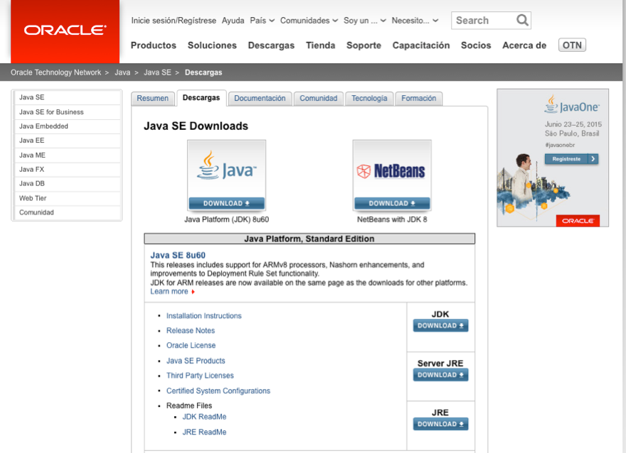
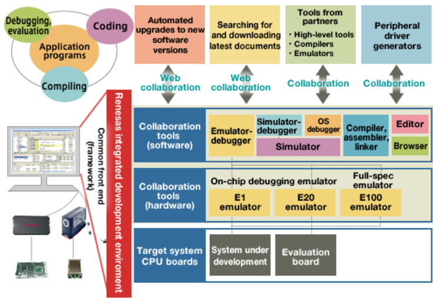

¿Cuántas acciones de las que has realizado hoy, crees que están relacionadas con la programación? Hagamos un repaso de los primeros instantes del día: te ha despertado la alarma de tu teléfono móvil o radio-despertador, has preparado el desayuno utilizando el microondas, mientras desayunabas has visto u oído las últimas noticias a través de tu receptor de televisión digital terrestre, te has vestido y puede que hayas utilizado el ascensor para bajar al portal y salir a la calle, etc. Quizás no es necesario que continuemos más, para darnos cuenta de que casi todo lo que nos rodea, en alguna medida, está relacionado con la programación; los programas y el tratamiento de algún tipo de información. El volumen de datos que actualmente manejamos y sus innumerables posibilidades de tratamiento, constituyen un vasto territorio en el que los programadores tienen mucho que decir. En esta primera unidad, realizaremos un recorrido por los conceptos fundamentales de la programación de aplicaciones. Iniciaremos nuestro camino conociendo con qué vamos a trabajar, qué técnicas podemos emplear y qué es lo que pretendemos conseguir. Posteriormente, continuaremos con el análisis de las diferentes formas de programación existentes, identificaremos qué fases conforman el desarrollo de un programa, avanzaremos detallando las características relevantes de cada uno de los lenguajes de programación disponibles para que, luego, realicemos una visión general del lenguaje de programación Java. Finalmente, tendremos la oportunidad de conocer con qué herramientas podríamos desarrollar nuestros programas, escogiendo entre una de ellas para ponernos manos a la obra utilizando el lenguaje Java.
Generalmente, la primera razón que mueve a una persona hacia el aprendizaje de la programación es utilizar el ordenador como herramienta para resolver problemas concretos. Como en la vida real, la búsqueda y obtención de una solución a un problema determinado, utilizando medios informáticos, se lleva a cabo siguiendo unos pasos fundamentales. En la siguiente tabla podemos ver estas analogías.
| En la vida real | En Programación |
|---|---|
| Observación de la situación o problema. | Análisis del problema: requiere que el problema sea definido y comprendido claramente para que pueda ser analizado con todo detalle. |
| Pensamos en una o varias posibles soluciones. | Diseño o desarrollo de algoritmos: procedimiento paso a paso para solucionar el problema dado.. |
| Aplicamos la solución que estimamos más adecuada. | Resolución del algoritmo elegido en la computadora: consiste en convertir el algoritmo en programa, ejecutarlo y comprobar que soluciona verdaderamente el problema. |
¿Qué virtudes debería tener nuestra solución?
Para conseguirlo, cuando afrontemos la construcción de la solución tendremos que tener en cuenta los siguientes conceptos:
Después de analizar en detalle el problema a solucionar, hemos de diseñar y desarrollar el algoritmo adecuado. Pero, ¿Qué es un algoritmo?
Algoritmo: secuencia ordenada de pasos, descrita sin ambigüedades, que conducen a la solución de un problema dado.
Los algoritmos son independientes de los lenguajes de programación y de las computadoras donde se ejecutan. Un mismo algoritmo puede ser expresado en diferentes lenguajes de programación y podría ser ejecutado en diferentes dispositivos. Piensa en una receta de cocina, ésta puede ser expresada en castellano, inglés o francés, podría ser cocinada en fogón o vitrocerámica, por un cocinero o más, etc. Pero independientemente de todas estas circunstancias, el plato se preparará siguiendo los mismos pasos.
La diferencia fundamental entre algoritmo y programa es que, en el segundo, los pasos que permiten resolver el problema, deben escribirse en un determinado lenguaje de programación para que puedan ser ejecutados en el ordenador y así obtener la solución.
Los lenguajes de programación son sólo un medio para expresar el algoritmo y el ordenador un procesador para ejecutarlo. El diseño de los algoritmos será una tarea que necesitará de la creatividad y conocimientos de las técnicas de programación. Estilos distintos, de distintos programadores a la hora de obtener la solución del problema, darán lugar a algoritmos diferentes, igualmente válidos.
En esencia, todo problema se puede describir por medio de un algoritmo y las características fundamentales que éstos deben cumplir son:
Pero cuando los problemas son complejos, es necesario descomponer éstos en subproblemas más simples y, a su vez, en otros más pequeños. Estas estrategias reciben el nombre de diseño descendente o diseño modular (top-down design). Este sistema se basa en el lema divide y vencerás.
Para representar gráficamente los algoritmos que vamos a diseñar, tenemos a nuestra disposición diferentes herramientas que ayudarán a describir su comportamiento de una forma precisa y genérica, para luego poder codificarlos con el lenguaje que nos interese. Entre otras tenemos:
Debes conocer
A continuación, te ofrecemos dos enlaces muy interesantes:
- En el primer vídeo puedes ver los elementos gráficos fundamentales que se utilizan para la generación de diagramas de flujo.
- En el segundo vídeo se realiza la construcción de un diagrama de flujo con una herramienta gráfica y su transformación a pseudocódigo.
Autoevaluación
Rellena los huecos con los conceptos adecuados:
A los pasos que permiten resolver el problema, escritos en un lenguaje de programación, para que puedan ser ejecutados en el ordenador y así obtener la solución, se les denomina: PROGRAMA.
A los pasos que permiten resolver el problema, escritos en un lenguaje de programación, para que puedan ser ejecutados en el ordenador y así obtener la solución, se les denomina: Programa. Si estos pasos estuvieran descritos en un lenguaje genérico independiente de la máquina y del lenguaje de programación, estaríamos hablando de algoritmos.
¿Cuántas formas existen de hacer las cosas? Supongo que estarás pensando: varias o incluso, muchas. Pero cuando se establece un patrón para la creación de aplicaciones nos estamos acercando al significado de la palabra paradigma.
Paradigma de programación: es un modelo básico para el diseño y la implementación de programas. Este modelo determinará cómo será el proceso de diseño y la estructura final del programa.
El paradigma representa un enfoque particular o filosofía para la construcción de software. Cada uno tendrá sus ventajas e inconvenientes, será más o menos apropiado, pero no es correcto decir que exista uno mejor que los demás.
| PARADIGMAS DE PROGRAMACIÓN |
|---|
| Programación Imperativa: Consiste en una serie de comandos que una computadora ejecutará. Estos comandos detallan de forma clara y específica el cómo hacer las cosas y llevarán al programa a través de distintos estados. Utiliza variables, tipos de datos, expresiones y estructuras de control de flujo del programa. De ella se desarrolla la Programación convencional, o no estructurada, sin herramientas de estructuración o modificación de código. Los programas eran líneas de código de difícil lectura o modificación, basados en instrucciones de salto (Goto) que modificaban el flujo. Eran un único archivo, de difícil mantenimiento y representación. De ahí partió la Programación estructurada, que intentaba solventar los problemas y limitaciones anteriores. Permite utilizar estructuras de modificación reutilización y lectura de código y el uso del concepto de función (programación modular), que agrupan código para la realización de tareas, donde y cuando se necesiten. Permite una representación más clara del funcionamiento de los programas mediante diagramas, en los que se representan estructuras condicionales, bucles,…Sus limitaciones, llevaron a desarrollar la Programación Orientada a Objetos, donde el mundo se ve desde el punto de vista de los objetos que hay en él. Estos tienen características (propiedades) y con ellos pueden realizarse acciones (métodos). En esta filosofía se busca encontrar los objetos, en vez de las funciones como en programación estructurada. Incluye herencia, polimorfismo y encapsulamiento. Ej: JAVA, C, C++. PHP. A partir de esta, se desarrolla la programación Visual, orientada a aspectos, a eventos,… muchos con conceptos desarrollados en otros paradigmas. |
| Programación Declarativa:: Opuesta a la programación imperativa, se basa en el desarrollo de programas realizando una especificación o “declaración” de un conjunto de condiciones, proposiciones, afirmaciones, restricciones y transformaciones que describen el problema y detallan su solución. Las sentencias que se utilizan, lo que hacen es describir el problema que se quiere solucionar, pero no las instrucciones necesarias para llevarlo a cabo. Ej: SQL. |
| Destacan la programación lógica, donde se especifica qué hacer y no cómo hacerlo. Se utiliza en Inteligencia artificial. Ej: Lenguaje PROLOG. y la programación funcional, considera al programa como una función matemática, donde el dominio representaría el conjunto de todas las entradas posibles(inputs) y el rango sería el conjunto de todas las salidas posibles (outputs). La forma en que funciona puede ser entendida como una caja negra, ésta tiene una serie de entradas, un procesamiento interno y una salida. |
| No existe el concepto de variable, además el funcionamiento es independiente del resto. Ej:Lenguaje LISP. |
Como habrás podido apreciar, existen múltiples paradigmas, incluso puede haber lenguajes de programación que no se clasifiquen únicamente dentro de uno de ellos. Un lenguaje como Smalltalk es un lenguaje basado en el paradigma orientado a objetos. El lenguaje de programación Scheme , en cambio, soporta sólo programación funcional. Python, soporta múltiples paradigmas.
Para saber más
Te proponemos el siguiente enlace en el que encontrarás información adicional sobre los diferentes paradigmas de programación.
Paradigmas de programación y lenguajes
¿Cuál es el objetivo que se busca con la aplicación de los diferentes enfoques? Fundamentalmente, reducir la dificultad para el mantenimiento de las aplicaciones, mejorar el rendimiento del programador y, en general, mejorar la productividad y calidad de los programas.
Sea cual sea el estilo que escojamos, a la hora de automatizar una determinada tarea, debemos realizar el proceso aplicando un método a nuestro trabajo. Es decir, sabemos que vamos a dar solución a un problema, aplicando una filosofía de desarrollo y lo haremos dando una serie de pasos que deben estar bien definidos.
El proceso de creación de software puede dividirse en diferentes fases:
A continuación, analizaremos cada una de ellas.
Para el comienzo de esta fase, es necesario que el problema sea definido y comprendido claramente para que pueda ser analizado con todo detalle. A su vez, la fase de resolución del problema puede dividirse en dos etapas:
| Ejercicio resuelto |
|---|
| Vamos a ilustrar esta fase realizando el análisis del siguiente problema: “Leer el radio de un círculo y calcular e imprimir su superficie y circunferencia.” Está claro que las entradas de datos en este problema se reducen al radio del círculo, pero piensa ¿qué salidas de datos ofrecerá la solución? |
| Las salidas serán...
Variable de salida SUPERFICIE: será la superficie del círculo. (¿Te acuerdas? El número Pi por el radio al cuadrado). Variable de salida CIRCUNFERENCIA: será la longitud de la circunferencia del círculo. (¿Y de ésta? Dos por el número Pi y por el radio) Y la entrada... Variable RADIO: será el radio del círculo. Estas variables RADIO, SUPERFICIE y CIRCUNFERENCIA podrán ser de tipo real (números con parte entera y parte decimal, por ejemplo: 3,57) |
Si la fase de resolución del problema requiere un especial cuidado en la realización del análisis y el posterior diseño de la solución, la fase de implementación cobra también una especial relevancia. Llevar a la realidad nuestro algoritmo implicará cubrir algunas etapas más que se detallan a continuación.
Compilación: es el proceso por el cual se traducen las instrucciones escritas en un determinado lenguaje de programación a lenguaje que la máquina es capaz de interpretar
Compilador: programa informático que realiza la traducción. Recibe el código fuente, realiza un análisis lexicográfico, semántico y sintáctico, genera un código intermedio no optimizado, optimiza dicho código y finalmente, genera el código objeto para una plataforma específica.
Intérprete: programa informático capaz de analizar y ejecutar otros programas, escritos en un lenguaje de alto nivel. Los intérpretes se diferencian de los compiladores en que mientras estos traducen un programa desde su descripción en un lenguaje de programación al código de máquina del sistema, los intérpretes sólo realizan la traducción a medida que sea necesaria, típicamente, instrucción por instrucción y, normalmente, no guardan el resultado de dicha traducción.
Autoevaluación
Rellena los huecos con los conceptos adecuados:
En la fase de codificación, hemos de tener en cuenta la sintaxis del lenguaje para obtener el código fuente o programa. Posteriormente, éste deberá ser compilado o interpretado para que pueda ser ejecutado posteriormente.
Cuando el programa ya está instalado en el sistema y está siendo de utilidad para los usuarios, decimos que se encuentra en fase de explotación.
Periódicamente será necesario realizar evaluaciones y, si es necesario, llevar a cabo modificaciones para que el programa se adapte o actualice a nuevas necesidades, pudiendo también corregirse errores no detectados anteriormente. Este proceso recibe el nombre de mantenimiento del software.
Mantenimiento del software: es el proceso de mejora y optimización del software después de su entrega al usuario final. Involucra cambios al software en orden de corregir defectos y dependencias encontradas durante su uso, así como la adición de nuevas funcionalidades para mejorar la usabilidad y aplicabilidad del software.
Será imprescindible añadir una documentación adecuada que facilite al programador la comprensión, uso y modificación de dichos programas.
Para saber más
En el siguiente video se presenta, de una forma amena, lo visto sobre las etapas de desarrollo del software.
Sean cuales sean las fases en las que realicemos el proceso de desarrollo de software, y casi independientemente de él, siempre se debe aplicar un modelo de ciclo de vida.
Ciclo de vida del software: es una sucesión de estados o fases por las cuales pasa un software a lo largo de su "vida".
El proceso de desarrollo puede involucrar siempre las siguientes etapas mínimas:
Todos estos procesos han provocado la necesidad de profesionalizar el desarrollo, mantenimiento y operación de los sistemas de software, creando métodos y formas de trabajo que sean sistemáticos, disciplinados y cuantificables.
Existen varios tipos de ciclos de vida del software, a continuación, te mostramos un resumen de los más importantes.
| Tipos de Ciclo de vida del Software | ||
|---|---|---|
| Modelo en Cascada, "modelo clásico", "modelo tradicional" o "modelo lineal secuencial". | Para comenzar una fase ha de finalizarse la anterior. Es rígido y en la práctica presenta algunos problemas de aplicación. Es el más utilizado por su escasa complejidad. | Análisis y diseño de software. Definición de Requerimientos. Implementación y Prueba de unidades. Operación y Mantenimiento. |
| Modelo por Prototipos. | Este ciclo de vida se basa en la creación de prototipos que irán mejorando el conocimiento del problema, tanto para el usuario como para los desarrolladores. | La fase de especificación de requerimientos está compuesta por las siguientes subfases:
Pequeño análisis y especificación. Diseño y realización. Evaluación. Modificación. Finalización de los requerimientos. |
| Modelo Evolutivo. | Empleado para facilitar la creación de aplicaciones flexibles escalables, que permitan incorporar modificaciones muy rápidamente una vez que se finalice su desarrollo.
Este modelo permite adaptarse a requisitos que varíen en el tiempo. Es un modelo iterativo, permiten desarrollar versiones cada vez más complejas, hasta llegar al objetivo final deseado; incluso evolucionar más allá, durante la fase de explotación. Los modelos "iterativo incremental" y "espiral" son de tipo evolutivo. |
|
| Modelo Incremental. El funcionamiento del modelo iterativo incremental, permite la entrega de versiones parciales a medida que se va construyendo el producto final. Por ejemplo, tras la especificación, durante el Desarrollo, un procesador de texto podría incluir inicialmente funciones básicas, luego añadir pre visualización y paginación, luego corrección ortográfica, etc., hasta llegar a la validación y lograr el procesador de texto final. | Modelo en Espiral. Emplea lo mejor de los modelos convencional y por prototipos. Está dividido en cuatro fases:
Planificación. Análisis de riesgo. Desarrollo, y, Evaluación del cliente. El paso por cada una de estas fases se repetirá tantas veces sea necesario hasta que se cumplan todos los requerimientos del usuario. |
|
Autoevaluación
Entre los distintos tipos de ciclo de vida del software, los modelos incremental y en cascada son modelos del tipo evolutivo.
Falso. El modelo incremental sí es del tipo evolutivo, así como el modelo en espiral, ya que ambos permiten adaptarse a requisitos variables en el tiempo. El modelo en cascada es mucho más restrictivo y necesita de unos requerimientos prefijados y no variables.
Como hemos visto, en todo el proceso de resolución de un problema mediante la creación de software, después del análisis del problema y del diseño del algoritmo que pueda resolverlo, es necesario traducir éste a un lenguaje que exprese claramente cada uno de los pasos a seguir para su correcta ejecución. Este lenguaje recibe el nombre de lenguaje de programación.
Lenguaje de programación: conjunto de reglas sintácticas y semánticas, símbolos y palabras especiales establecidas para la construcción de programas. Es un lenguaje artificial, una construcción mental del ser humano para expresar programas.
Gramática del lenguaje: reglas aplicables al conjunto de símbolos y palabras especiales del lenguaje de programación para la construcción de sentencias correctas.
Léxico: es el conjunto finito de símbolos y palabras especiales, es el vocabulario del lenguaje. Los símbolos también se denominan elementos léxicos o tokens. Léxico significa diccionario y, aplicado en el ambiente de lenguajes de programación, se utiliza para denotar los símbolos del lenguaje. Estos símbolos, a su vez, están formados por secuencias de caracteres y existen reglas que determinan cómo puede generarse o producirse un símbolo a partir de caracteres.
Sintaxis: es el conjunto de reglas que deben seguirse al escribir el código fuente de los programas para considerarse como correctospara ese lenguaje de programación, relacionado con las posibles combinaciones de los símbolos y palabras especiales. Está relacionada con la forma de los programas.
Con frecuencia se resaltan los elementos de la sintaxis con colores diferentes para facilitar su lectura. Este ejemplo está escrito en Python
Por lo tanto, cada lenguaje de programación define reglas que permiten componer el texto de un programa como una secuencia de símbolos. El conjunto de estas reglas se denomina gramática o, más usualmente, la sintaxis del lenguaje. Sintaxis significa con orden. Cada regla establece una clase definida de objetos o categorías sintácticas; como ejemplos pueden darse algunas partes típicas de un programa: acciones, declaraciones, condiciones, expresiones, etc.
Semántica: es el significado de cada construcción del lenguaje, la acción que se llevará a cabo. Por tanto, la semántica de un lenguaje de programación se refiere al significado que adoptan las distintas sentencias, expresiones y enunciados de un programa. La semántica engloba aspectos sensibles al contexto, a diferencia de la sintaxis que considera aspectos libres de contexto.
Hay que tener en cuenta que pueden existir sentencias sintácticamente correctas, pero semánticamente incorrectas. Por ejemplo, "Un avestruz dio un zarpazo a su cuidador" está bien construida sintácticamente, pero es evidente que semánticamente no.
Una característica relevante de los lenguajes de programación es, precisamente, que más de un programador pueda usar un conjunto común de instrucciones que sean comprendidas entre ellos. A través de este conjunto se puede lograr la construcción de un programa de forma colaborativa.
Los lenguajes de programación pueden ser clasificados en función de lo cerca que estén del lenguaje humano o del lenguaje de los computadores. El lenguaje de los computadores son códigos binarios, es decir, secuencias de unos y ceros. Detallaremos seguidamente las características principales de los lenguajes de programación.
Este es el lenguaje utilizado directamente por el procesador, consta de un conjunto de instrucciones codificadas en binario. Es el sistema de códigos directamente interpretable por un circuito microprogramable .
Este fue el primer lenguaje utilizado para la programación de computadores. De hecho, cada máquina tenía su propio conjunto de instrucciones codificadas en ceros y unos (instrucciones en binario), con los cuales se le indican al ordenador las órdenes que debe seguir. Cuando un algoritmo está escrito en este tipo de lenguaje, decimos que está en código máquina.
Programar en este tipo de lenguaje presentaba los siguientes inconvenientes:
A continuación, se muestran algunos códigos binarios equivalentes a las operaciones de suma, resta y movimiento de datos en lenguaje máquina.
| Algunas operaciones en lenguaje máquina. | Operación | Lenguaje máquina |
|---|---|
| SUMAR | 00101101 |
| RESTAR | 00010011 |
| MOVER | 00111010 |
Dada la complejidad y dificultades que ofrecía este lenguaje, fue sustituido por otros más sencillos y fáciles utilizar. No obstante, hay que tener en cuenta que todos los programas para poder ser ejecutados, han de traducirse siempre al lenguaje máquina que es el único que entiende la computadora.
Este lenguaje, al ser muy complicado para el programador, fue sustituido por el lenguaje ensamblador, que utilizaba una abreviatura o nemotécnico de cada instrucción en binario, de forma que sea más fácil recordarla pero, aun así, sigue siendo necesario tener unos conocimientos exhaustivos del hardware.
En el siguiente ejemplo puedes ver un ejemplo de lenguajes de máquina y ensamblador, resaltando en rojo el código máquina, en morado el código ensamblador y las directrices de memoria, en azul.
Para saber más
Como recordatorio, te proponemos el siguiente enlace sobre cómo funciona el sistema binario.
La evolución del lenguaje máquina fue el lenguaje ensamblador. Las instrucciones ya no son secuencias binarias, se sustituyen por códigos de operación que describen una operación elemental del procesador. Es un lenguaje de bajo nivel, al igual que el lenguaje máquina, ya que dependen directamente del hardware donde son ejecutados.
Mnemotécnico: son palabras especiales, que sustituyen largas secuencias de ceros y unos, utilizadas para referirse a diferentes operaciones disponibles en el juego de instrucciones que soporta cada máquina en particular.
En ensamblador, cada instrucción (mnemotécnico) se corresponde a una instrucción del procesador. En la siguiente tabla se muestran algunos ejemplos.
| Algunas operaciones y su mnemotécnico en lenguaje Ensamblador. | Operación | Lenguaje Ensamblador |
|---|---|
| MULTIPLICAR | MUL |
| DIVIDIR | DIV |
| MOVER | MOV |
En el siguiente gráfico puedes ver parte de un programa escrito en lenguaje ensamblador. En color rojo se ha resaltado el código máquina en hexadecimal, en magenta el código escrito en ensamblador y en azul, las direcciones de memoria donde se encuentra el código.
Pero, aunque ensamblador fue un intento por aproximar el lenguaje de los procesadores al lenguaje humano, presentaba múltiples dificultades:
Todo programa escrito en lenguaje ensamblador necesita de un intermediario, que realice la traducción de cada una de las instrucciones que componen su código al lenguaje máquina correspondiente. Este intermediario es el programa ensamblador. El programa original escrito en lenguaje ensamblador constituye el código fuente y el programa traducido al lenguaje máquina se conoce como programa objeto que será directamente ejecutado por la computadora.
Para paliar los problemas derivados del uso del lenguaje ensamblador y con el objetivo de acercar la programación hacia el uso de un lenguaje más cercano al humano que al del computador, nacieron los lenguajes compilados. Algunos ejemplos de este tipo de lenguajes son: Pascal, Fortran, Algol, C, C++, etc.
Al ser lenguajes más cercanos al humano, también se les denomina lenguajes de alto nivel. Son más fáciles de utilizar y comprender. Las instrucciones que forman parte de estos lenguajes utilizan palabras y signos reconocibles por el programador.
¿Cuáles son sus ventajas?
Pero un programa que está escrito en un lenguaje de alto nivel también tiene que traducirse a un código que pueda utilizar la máquina. Los programas traductores que pueden realizar esta operación se llaman compiladores.
Compilador: es un programa informático cuya función consiste en traducir el código fuente de un programa escrito en un lenguaje de alto nivel a lenguaje máquina. Al proceso de traducción se le conoce con el nombre de compilación.
Para ilustrar el proceso de compilación de programas te proponemos el siguiente enlace:
Proceso de compilación en varias plataformas
El compilador realizará la traducción y además informará de los posibles errores. Una vez subsanados, se generará el programa traducido a código máquina, conocido como código objeto. Este programa aún no podrá ser ejecutado hasta que no se le añadan los módulos de enlace o bibliotecas, durante el proceso de enlazado. Una vez finalizado el enlazado, se obtiene el código ejecutable.
Se caracterizan por estar diseñados para que su ejecución se realice a través de un intérprete. Cada instrucción escrita en un lenguaje interpretado se analiza, traduce y ejecuta tras haber sido verificada. Una vez realizado el proceso por el intérprete, la instrucción se ejecuta, pero no se guarda en memoria.
Intérprete: es un programa traductor de un lenguaje de alto nivel en el que el proceso de traducción y de ejecución se lleva a cabo simultáneamente, es decir, la instrucción se pasa a lenguaje máquina y se ejecuta directamente. No se genera programa objeto, ni programa ejecutable.
Los lenguajes interpretados generan programas de menor tamaño que los generados por un compilador, al no guardar el programa traducido a código máquina. Pero presentan el inconveniente de ser algo más lentos, ya que han de ser traducidos durante su ejecución. Por otra parte, necesitan disponer en la máquina del programa intérprete ejecutándose, algo que no es necesario en el caso de un programa compilado, para los que sólo es necesario tener el programa ejecutable para poder utilizarlo.
Ejemplos de lenguajes interpretados son: Perl, PHP, Python, JavaScript, etc.
A medio camino entre los lenguajes compilados y los interpretados, existen los lenguajes que podemos denominar pseudo-compilados o pseudo-interpretados, es el caso del Lenguaje Java.
Java puede verse como compilado e interpretado a la vez, ya que su código fuente se compila para obtener el código binario en forma de bytecodes, que son estructuras parecidas a las instrucciones máquina, con la importante propiedad de no ser dependientes de ningún tipo de máquina (se detallarán más adelante). La Máquina Virtual Java se encargará de interpretar este código y, para su ejecución, lo traducirá a código máquina del procesador en particular sobre el que se esté trabajando.
| Por lo general, es más fácil aprender un lenguaje de programación interpretado (escribes código y lo ejecutas en el acto) que un lenguaje compilado (escribes código y creas un ejecutable). Es una cuestión de inmediatez: aprendes algo y lo pruebas. |
|
Lenguajes compilados vs. interpretados. Fuente: endlessly Al ser interpretado, un programa es más lento al ejecutarse, pero tiene otras propiedades que lo hacen interesante: es independiente del sistema operativo utilizado, su código es fácil de corregir y hay que preocuparse menos por el hardware. Hay otro punto por el que un lenguaje interpretado es mejor para el aprendizaje: su código fuente es legible. Los programas compilados no se pueden inspeccionar en busca de ideas o para aprender cómo funcionan (a menos que hagas ingeniería inversa). |
Debes conocer
Puedes entender por qué Java es un lenguaje compilado e interpretado a través del siguiente esquema.
El lenguaje Java es compilado e interpretado. .
Autoevaluación
En Java el código fuente es compilado, obteniéndose el código binario en forma de bytecodes. Pero, ¿Cuál es la extensión del archivo resultante?
.class:
Correcto, los archivos con extensión .class son los que la Máquina Virtual Java traducirá para poder ejecutarlos en la máquina real.
.obj: Incorrecto, los archivos .obj son generados por un compilador antes de generar el archivo ejecutable.
.java: Incorrecto, los archivos con extensión .java contienen el código fuente del programa.
Java es un lenguaje sencillo de aprender, con una sintaxis parecida a la de C++, pero en la que se han eliminado elementos complicados y que pueden originar errores. Java es orientado a objetos, con lo que elimina muchas preocupaciones al programador y permite la utilización de gran cantidad de bibliotecas ya definidas, evitando reescribir código que ya existe. Es un lenguaje de programación creado para satisfacer nuevas necesidades que los lenguajes existentes hasta el momento no eran capaces de solventar.
Una de las principales virtudes de Java es su independencia del hardware, ya que el código que se genera es válido para cualquier plataforma. Este código será ejecutado sobre una máquina virtual denominada Máquina Virtual Java (MVJ o JVM – Java Virtual Machine), que interpretará el código convirtiéndolo a código específico de la plataforma que lo soporta. De este modo el programa se escribe una única vez y puede hacerse funcionar en cualquier lugar. Lema del lenguaje: “Write once, run everywhere”.
Antes de que apareciera Java, el lenguaje C era uno de los más extendidos por su versatilidad. Pero cuando los programas escritos en C aumentaban de volumen, su manejo comenzaba a complicarse. Mediante las técnicas de programación estructurada y programación modular se conseguían reducir estas complicaciones, pero no era suficiente.
Fue entonces cuando la Programación Orientada a Objetos (POO) entra en escena, aproximando notablemente la construcción de programas al pensamiento humano y haciendo más sencillo todo el proceso. Los problemas se dividen en objetos que tienen propiedades e interactúan con otros objetos, de este modo, el programador puede centrarse en cada objeto para programar internamente los elementos y funciones que lo componen.
Las características principales de lenguaje Java se resumen a continuación:
Debes conocer
Obtén una descripción detallada de las características reseñadas anteriormente, a través del siguiente artículo:
Características detalladas del lenguaje Java .
Java surgió en 1991 cuando un grupo de ingenieros de Sun Microsystems trataron de diseñar un nuevo lenguaje de programación destinado a programar pequeños dispositivos electrónicos. La dificultad de estos dispositivos es que cambian continuamente y para que un programa funcione en el siguiente dispositivo aparecido, hay que rescribir el código. Por eso la empresa Sun quería crear un lenguaje independiente del dispositivo.
Pero no fue hasta 1995 cuando pasó a llamarse Java, dándose a conocer al público como lenguaje de programación para computadores. Java pasa a ser un lenguaje totalmente independiente de la plataforma y a la vez potente y orientado a objetos. Esa filosofía y su facilidad para crear aplicaciones para redes TCP/IP ha hecho que sea uno de los lenguajes más utilizados en la actualidad.
El factor determinante para su expansión fue la incorporación de un intérprete Java en la versión 2.0 del navegador Web Netscape Navigator, lo que supuso un gran revuelo en Internet. A principios de 1997 apareció Java 1.1que proporcionó sustanciales mejoras al lenguaje. Java 1.2, más tarde rebautizado como Java 2, nació a finales de 1998.
El principal objetivo del lenguaje Java, es llegar a ser el nexo universal que conecte a los usuarios con la información, esté ésta situada en el ordenador local, en un servidor Web, en una base de datos o en cualquier otro lugar.
Para el desarrollo de programas en lenguaje Java es necesario utilizar un entorno de desarrollo denominado JDK (Java Development Kit), que provee de un compilador y un entorno de ejecución (JRE – Java Run Environment) para los bytecodes generados a partir del código fuente. Al igual que las diferentes versiones del lenguaje han incorporado mejoras, el entorno de desarrollo y ejecución también ha sido mejorado sucesivamente.
Java 2 es la tercera versión del lenguaje, pero es algo más que un lenguaje de programación, incluye los siguientes elementos:
El siguiente esquema muestra los elementos fundamentales de la plataforma de desarrollo Java 2.
Hay tres ediciones de la plataforma Java 2:
J2EE engloba a J2SE, y J2SE a su vez engloba a J2ME. Pero por su parte J2ME tiene cierto parte diferenciada de J2SE y J2EE:
Fuente: Slireshare
Actualmente, la última versión de Java disponible es 8 Update 60, cuya fecha de revisión fue el 18 de agosto de 2015 y lanzada en marzo de 2014. Cabe destacar:
En el 2015 se calcula en 4,5 millones el número de desarrolladores y 2.500 millones de dispositivos habilitados con tecnología Java. Es conveniente tener la última versión de Java instalada para mejorar la seguridad del sistema, ya que las anteriores versiones no incluyen las actualizaciones de seguridad. Java se está utilizando para chatear con personas de todo el mundo, calcular los intereses de la hipoteca, ver imágenes en 3D, entre otras muchas cosas.
Para saber más
Si deseas conocer más sobre los orígenes del lenguaje Java, aquí te ofrecemos más información:
Los orígenes de Java
Historia de Java
Línea de tiempo de la historia de Java
En Java, los datos y el código (funciones o métodos) se combinan en entidades llamadas objetos. El objeto tendrá un comportamiento (su código interno) y un estado (los datos). Los objetos permiten la reutilización del código y pueden considerarse, en sí mismos, como piezas reutilizables en múltiples proyectos distintos. Esta característica permite reducir el tiempo de desarrollo de software.
Por simplificar un poco las cosas, un programa en Java será como una representación teatral en la que debemos preparar primero cada personaje, definir sus características y qué va a saber hacer. Cuando esta fase esté terminada, la obra se desarrollará sacando personajes a escena y haciéndoles interactuar.
Al emplear los conceptos de la Programación Orientada a Objetos (POO), Java incorpora las tres características propias de este paradigma: encapsulación, herencia y polimorfismo. Los patrones o tipos de objetos se denominan clases y los objetos que utilizan estos patrones o pertenecen a dichos tipos, se identifican con el nombre de instancias. Pero, no hay que alarmarse, estos conceptos se verán más adelante en sucesivas unidades.
Otro ejemplo para seguir aclarando ideas, piensa en los bloques de juegos de construcción. Suponemos que conoces los cubos de plástico en varios colores y tamaños. Por una de sus caras disponen de pequeños conectores circulares y en otra de sus caras pequeños orificios en los que pueden conectarse otros bloques, con el objetivo principal de permitir construir formas más grandes. Si usas diferentes piezas del lego puedes construir aviones, coches, edificios, etc. Si te fijas bien, cada pieza es un objeto pequeño que puede unirse con otros objetos para crear objetos más grandes.
Pues bien, aproximadamente así es como funciona la programación dirigida a objetos: unimos elementos pequeños para construir otros más grandes. Nuestros programas estarán formados por muchos componentes (objetos) independientes y diferentes; cada uno con una función determinada en nuestro software y que podrá comunicarse con los demás de una manera predefinida.
Existen dos características que distinguen a Java de otros lenguajes, como son la independencia de la plataforma y la posibilidad de trabajar en red o, mejor, la posibilidad de crear aplicaciones que trabajan en red.
Estas características las vamos a explicar a continuación:
Junto a las características diferenciadoras del lenguaje Java relacionadas con la independencia y el trabajo en red, han de destacarse dos virtudes que hacen a este lenguaje uno de los más extendidos entre la comunidad de programadores: su seguridad y su simplicidad.
Autoevaluación
Rellena los huecos con los conceptos adecuados:
En Java se ha simplificado la gestión de memoria a través de la eliminación de la Aritmética de punteros por lo que la incorporación del Garbage Collector evita que se produzca un crecimiento de los huecos libres en memoria, que recibe el nombre de fragmentación de memoria.
Los Punteros son un tipo especial de elemento utilizado en C/C++ que permiten realizar directamente gestión de la memoria del sistema, su control es complicado y, en ocasiones, peligroso. Al dejar en manos del recolector de basura la gestión de la memoria, se evita la Fragmentación y se reutilizan mejor los espacios libres. Liberando al programador para que se centre en el desarrollo del programa sin distracciones adicionales.
Un programa escrito en Java no es directamente
ejecutable, es necesario que el código fuente sea interpretado por
la Máquina Virtual Java. ¿Cuáles son los pasos que se siguen desde
que se genera el código fuente hasta que se ejecuta? A continuación,
se detallan cada uno de ellos.
Una vez escrito el código fuente (archivos con extensión .Java), éste es precompilado generándose los códigos de bytes, Bytecodes o Java Bytecodes (archivos con extensión .class) que serán interpretados directamente por la Máquina Virtual Java y traducidos a código nativo de la plataforma sobre la que se esté ejecutando el programa.
Bytecode: Son un conjunto de instrucciones en lenguaje máquina que no son específicas a ningún procesador o sistema de cómputo. Un intérprete de código de bytes (bytecodes) para una plataforma específica será quien los ejecute. A estos intérpretes también se les conoce como Máquinas Virtuales Java o intérpretes Java de tiempo de ejecución.
En el proceso de precompilación, existe un verificador de códigos de bytes que se asegurará de que se cumplen las siguientes condiciones:
Para que un bytecode pueda ser ejecutado en cualquier plataforma, es imprescindible que dicha plataforma cuente con el intérprete adecuado, es decir, la máquina virtual específica para esa plataforma. En general, la Máquina Virtual Java es un programa de reducido tamaño y gratuito para todos los sistemas operativos.
Hasta ahora, hemos descrito el lenguaje de programación Java, hemos hecho un recorrido por su historia y nos hemos instruido sobre su filosofía de trabajo, pero te preguntarás ¿Cuándo empezamos a desarrollar programas? ¿Qué elementos forman parte de un programa en Java? ¿Qué se necesita para programar en este lenguaje? ¿Podemos crear programas de diferente tipo?
No te impacientes, cada vez estamos más cerca de comenzar la experiencia con el lenguaje de programación Java. Iniciaremos nuestro camino conociendo cuales son los elementos básicos de un programa Java, la forma en que debemos escribir el código y los tipos de aplicaciones que pueden crearse en este lenguaje.
En el gráfico al que puedes acceder a continuación, se presenta la estructura general de un programa realizado en un lenguaje orientado a objetos como es Java.
Vamos a analizar cada uno de los elementos que aparecen en dicho gráfico:
public class Clase_Principal: todos los programas han de incluir una clase como esta. Es una clase general en la que se incluyen todos los demás elementos del programa. Entre otras cosas, contiene el método o función main() que representa al programa principal, desde el que se llevará a cabo la ejecución del programa. Esta clase puede contener a su vez otras clases del usuario, pero sólo una puede ser public. El nombre del fichero .Java que contiene el código fuente de nuestro programa, coincidirá con el nombre de la clase que estamos describiendo en estas líneas.
Recomendación
Ten en cuenta que Java distingue entre mayúsculas y minúsculas. Si le das a la clase principal el nombre PrimerPrograma, el archivo .Java tendrá como identificador PrimerPrograma.Java, que es totalmente diferente a primerprograma.Java. Además, para Java los elementos PrimerPrograma y primerprograma serían considerados dos clases diferentes dentro del código fuente.
Ya conoces cómo es la estructura de un programa en Java pero, ¿qué necesitamos para llevarlo a la práctica? La herramienta básica para empezar a desarrollar aplicaciones en Java es el JDK (Java Development Kit o Kit de Desarrollo Java), que incluye un compilador y un intérprete para línea de comandos. Estos dos programas son los empleados en la precompilación e interpretación del código.
Como veremos, existen diferentes entornos para la creación de programas en Java que incluyen multitud de herramientas, pero por ahora nos centraremos en el entorno más básico, extendido y gratuito, el Java Development Kit (JDK). Según se indica en la propia página web de Oracle, JDK es un entorno de desarrollo para construir aplicaciones, applets y componentes utilizando el lenguaje de programación Java. Incluye herramientas útiles para el desarrollo y prueba de programas escritos en Java y ejecutados en la Plataforma Java.
Así mismo, junto a JDK se incluye una implementación del entorno de ejecución Java, el JRE (Java Runtime Environment) para ser utilizado por el JDK. El JRE incluye la Máquina Virtual de Java (MVJ ó JVM – Java Virtual Machine), bibliotecas de clases y otros ficheros que soportan la ejecución de programas escritos en el lenguaje de programación Java.
Debes conocer
Para poder utilizar JDK y JRE es necesario realizar la descarga e instalación de éstos. Puedes seguir los pasos del proceso de instalación , escogiendo el sistema operativo donde se quiera instalar.

FUENTE: ORACLE.JAVA SE DOWNLOADS
Para poder desarrollar nuestros primeros programas en Java sólo necesitaremos un editor de texto plano y los elementos que acabamos de instalar a través de Java SE.
Junto con el kit de desarrollo que hemos descargado e instalado anteriormente, vienen incluidas gratuitamente todas las bibliotecas de la API (Aplication Programming Interface – Interfaz de programación de aplicaciones) de Java, es lo que se conoce como Bibliotecas de Clases Java. Este conjunto de bibliotecas proporciona al programador paquetes de clases útiles para la realización de múltiples tareas dentro de un programa. Está organizada en paquetes lógicos, donde cada paquete contiene un conjunto de clases relacionadas semánticamente.
En décadas pasadas una biblioteca era un conjunto
de programas que contenían cientos de rutinas (una rutina es un
procedimiento o función bien verificados, en determinado lenguaje de
programación). Las rutinas de biblioteca manejaban las tareas que
todos o casi todos los programas necesitaban. El programador podía
recurrir a esta biblioteca para desarrollar programas con
rapidez.
Una biblioteca de clases es un conjunto de clases de
programación orientada a objetos. Esas clases contienen métodos que
son útiles para los programadores. En el caso de Java cuando
descargamos el JDK obtenemos la biblioteca de clases API. Utilizar
las clases y métodos de las APIs de Java reduce el tiempo de
desarrollo de los programas. También, existen diversas bibliotecas
de clases desarrolladas por terceros que contienen componentes
reutilizables de software, y están disponibles a través de la Web.
Para saber más
Si quieres acceder a la información oficial sobre la API de Java, te proponemos el siguiente enlace (está en inglés).
Información oficial sobre la API de Java
Para que podamos compilar y ejecutar ficheros Java es necesario que realicemos unos pequeños ajustes en la configuración del sistema. Vamos a indicarle dónde encontrar los ficheros necesarios para realizar las labores de compilación y ejecución, en este caso Javac.exe y Java.exe, así como las librerías contenidas en la API de Java y las clases del usuario.
La variable PATH: Como aún no disponemos de un IDE (Integrated Development Environment - Entorno Integrado de Desarrollo) la única forma de ejecutar programas es a través de línea de comandos. Pero sólo podremos ejecutar programas directamente si la ruta hacia ellos está indicada en la variable PATH del ordenador. Es necesario que incluyamos la ruta hacia estos programas en nuestra variable PATH. Esta ruta será el lugar donde se instaló el JDK hasta su directorio bin.
Para ello, sigue las indicaciones que te mostramos a continuación:
|
Debes conocer Por tanto, PATH es la variable del sistema que utiliza el sistema operativo para buscar los ejecutables necesarios desde la línea de comandos o la ventana Terminal. La variable del sistema PATH se puede establecer utilizando la utilidad de sistema en el panel de control de Windows o en el archivo de inicio del shell en Linux y Solaris. Establecimiento de la variable Path en Windows: Windows 8
Windows 7
Windows XP
Windows Vista
Establecimiento de la variable Path en Solaris y Linux Para descubrir si el ejecutable de java está en PATH,
ejecute:
Para el shell C (csh):
|
Para saber más
Si deseas conocer más sobre la configuración de variables de entorno en sistema Linux, te proponemos el siguiente artículo para conocer brevemente cómo configurar, paso a paso, tu ruta de ambiente JAVA_HOME en tu perfil /etc/bash.basrc.
Configurar variables de entorno en Ubuntu
La variable CLASSPATH: esta variable de entorno establece dónde buscar las clases o bibliotecas de la API de Java, así como las clases creadas por el usuario. Es decir, los ficheros .class que se obtienen una vez compilado el código fuente de un programa escrito en Java. Es posible que en dicha ruta existan directorios y ficheros comprimidos en los formatos zip o jar que pueden ser utilizados directamente por el JDK, conteniendo en su interior archivos con extensión class.
(Por ejemplo: C:\Program Files\Java\jdk1.6.0_25\bin)
Si no existe la variable CLASSPATH debes crearla, para modificar su contenido sigue el mismo método que hemos empleado para la modificación del valor de la variable PATH, anteriormente descrito. Ten en cuenta que la ruta que debes incluir será el lugar donde se instaló el JDK hasta su directorio lib.
(Por ejemplo: C:\Program Files\Java\jdk1.6.0_25\lib)
|
DEBES CONOCER RECURSOS DE AYUDA En el caso de que tengas alguna duda, puedes apoyarte en los recursos de ayuda que te relacionamos a continuación: |
Autoevaluación
¿Qué variable de sistema o de entorno debemos configurar
correctamente para que podamos compilar directamente desde la línea
de comandos nuestros programas escritos en lenguaje Java?
CLASSPATH. No es correcto,
esta es la variable que hemos de configurar para conseguir que las
clases de Java o las creadas por el usuario estén accesibles por
nuestros programas.
PATH. Efectivamente, esta
es la variable de entorno que modificaremos añadiendo a su contenido
la ruta hasta el directorio bin donde está instalado el JDK.
Javac.exe. No es correcto,
la pregunta te pedía cuál es la variable, no cuál es el programa
para realizar la compilación.
Una vez que la configuración del entorno Java está completada y tenemos el código fuente de nuestro programa escrito en un archivo con extensión .Java, la compilación de aplicaciones se realiza mediante el programa Javac incluido en el software de desarrollo de Java.
Para llevar a cabo la compilación desde la línea de comandos, escribiremos:
Javac archivo.Java
Donde Javac es el compilador de Java y archivo.Java es nuestro código fuente.
El resultado de la compilación será un archivo con el mismo nombre que el archivo Java pero con la extensión class. Esto ya es el archivo con el código en forma de bytecode. Es decir, con el código precompilado. Si en el código fuente de nuestro programa figurara más de una clase, veremos cómo al realizar la compilación se generarán tantos archivos con extensión .class como clases tengamos. Además, si estas clases tenían método main podremos ejecutar dichos archivos por separado para ver el funcionamiento de dichas clases.
Para que el programa pueda ser ejecutado, siempre y cuando esté incluido en su interior el método main, podremos utilizar el intérprete incluido en el kit de desarrollo.
La ejecución de nuestro programa desde la línea de comandos podremos hacerla escribiendo:
Java archivo.classDonde Java es el intérprete y archivo.class es el archivo con el código precompilado.
Ejercicio resuelto
Vamos a llevar a la práctica todo lo que hemos estado detallando a través de la creación, compilación y ejecución de un programa sencillo escrito en Java.
Observa el código que se muestra más abajo, seguro que podrás entender parte de él. Cópialo en un editor de texto, respetando las mayúsculas y las minúsculas. Puedes guardar el archivo con extensión .Java en la ubicación que prefieras. Recuerda que el nombre de la clase principal (en el código de ejemplo MiModulo) debe ser exactamente igual al del archivo con extensión .Java, si tienes esto en cuenta la aplicación podrá ser compilada correctamente y ejecutada.
/**
* La clase
MiModulo implementa una aplicación que
* simplemente imprime
"Módulo profesional - Programación" en
pantalla.
*/
class
MiModulo {
public
static void main(String[] args) {
System.out.println("Módulo profesional - Programación");
//
Muestra la cadena de caracteres.
}
}
Accede a la línea de comandos y teclea, en la carpeta donde has guardado el archivo Java, el comando para compilarlo: Javac MiModulo.Java.
El compilador
genera entonces un fichero de código de bytes: MiModulo.class.
Si visualizas ahora el contenido de la carpeta verás que en ella
está el archivo .Java
y uno o varios (depende de las clases que contenga el archivo con
el código fuente) archivos .class.
Finalmente, para
realizar la ejecución del programa debes utilizar la
siguiente sentencia:
Java
MiModulo.Java
Si todo ha ido bien, verás escrito en pantalla:” Módulo profesional – Programación”.
La versatilidad del lenguaje de programación Java permite al programador crear distintos tipos de aplicaciones. A continuación, describiremos las características más relevantes de cada uno de ellos:
Fuente: itesm.mx
Autoevaluación
Un Applet es totalmente seguro ya que no puede acceder, en ningún caso, a zonas sensibles del sistema. Es decir, no podría borrar o modificar nuestros archivos.
Falso: Los Applets podrían acceder a zonas sensibles de nuestro sistema si les diéramos permisos para hacerlo. Pero si no está firmado como confiable, tiene un acceso limitado al sistema del usuario.
En los comienzos de Java la utilización de la línea de comandos era algo habitual. El programador escribía el código fuente empleando un editor de texto básico, seguidamente, pasaba a utilizar un compilador y con él obtenía el código compilado. En un paso posterior, necesitaba emplear una tercera herramienta para el ensamblado del programa. Por último, podía probar a través de la línea de comandos el archivo ejecutable. El problema surgía cuando se producía algún error, lo que provocaba tener que volver a iniciar el proceso completo.
Estas circunstancias hacían que el desarrollo de software no estuviera optimizado. Con el paso del tiempo, se fueron desarrollando aplicaciones que incluían las herramientas necesarias para realizar todo el proceso de programación de forma más sencilla, fiable y rápida. Para cada lenguaje de programación existen múltiples entornos de desarrollo, cada uno con sus ventajas e inconvenientes. Dependiendo de las necesidades de la persona que va a programar, la facilidad de uso o lo agradable que le resulte trabajar con él, se elegirá entre unos u otros entornos.
Para el lenguaje de programación Java existen múltiples alternativas, siendo los principales entornos de desarrollo NetBeans (que cuenta con el apoyo de la empresa Sun), Eclipse y JCreator. Los dos primeros son gratuitos, con soporte de idiomas y multiplataforma (Windows, Linux, MacOS).
¿Y cuál será con el que vamos a trabajar? El entorno que hemos seleccionado llevar a cabo nuestros desarrollos de software en este módulo profesional será NetBeans, al haber sido construido por la misma compañía que creó Java, ser de código abierto y ofrecer capacidades profesionales. Aunque, no te preocupes, también haremos un recorrido por otros entornos destacables.
IDE (Integrated Development Enviroment): son aplicaciones informáticas que ofrecen la posibilidad de llevar a cabo el proceso completo de desarrollo de software a través de un único programa. Podremos realizar las labores de edición, compilación, depuración, detección de errores, corrección y ejecución de programas escritos en Java o en otros lenguajes de programación, bajo un entorno gráfico (no mediante línea de comandos). Junto a las capacidades descritas, cada entorno añade otras que ayudan a realizar el proceso de programación, como, por ejemplo: código fuente coloreado, plantillas para diferentes tipos de aplicaciones, creación de proyectos, etc.
El objeto de todo esto es lograr que el proceso de codificación sea lo más sencillo posible para así poder rebajar los tiempos de desarrollo de las aplicaciones. Estos interfaces además nos facilitan el trabajo con las clases y librerías, haciendo su incorporación más sencilla e intuitiva...
Hay que tener en cuenta que un entorno de desarrollo no es más que una fachada para el proceso de compilación y ejecución de un programa. ¿Qué quiere decir eso? Pues que, si tenemos instalado un IDE y no tenemos instalado el compilador, no tenemos nada.

Fuente: Maplesoft.
Para saber más
Si deseas conocer algo más sobre lo que son los Entornos Integrados de Desarrollo (IDE) accede a las definiciones que te proponemos a continuación:
Definición de Entorno Integrado de Desarrollo.
Definición de Entorno Integrado de Desarrollo en Wikipedia.
Existen en el mercado multitud de entornos de desarrollo para el lenguaje Java, los hay de libre distribución, de pago, para principiantes, para profesionales, que consumen más recursos, que son más ligeros, más amigables, más complejos que otros, etc.
Entre los que son gratuitos o de libre distribución tenemos:
NetBeans
Eclipse
BlueJ
Jgrasp
Jcreator LE
Entre los que son propietarios o de pago tenemos:
IntelliJ IDEA
Jbuilder
Jcreator
JDeveloper
Debes conocer
Cada uno de los entornos nombrados más arriba posee características que los hacen diferentes unos de otros, pero para tener una idea general de la versatilidad y potencia de cada uno de ellos, accede a la siguiente tabla comparativa:
Comparativa entornos para Java
Pero, ¿cuál o cuáles son los más utilizados por la comunidad de programadores Java? El puesto de honor se lo disputan entre Eclipse, IntelliJ IDEA y NetBeans. En los siguientes epígrafes haremos una descripción de NetBeans y Eclipse, para posteriormente desarrollar los puntos claves del entorno NetBeans.
Para saber más
Los programadores utilizan herramientas más sofisticadas, ya que facilitan el trabajo enormemente. Dentro de estas herramientas podríamos hablar de entornos de desarrollo (IDEs) o frameworks. Si quieres conocer la situación actual de uso y comparar los diferentes entornos integrados de desarrollo para el lenguaje de programación Java, puedes ampliar datos en el siguiente artículo:
Artículo con comparativa sobre utilización de entornos Java.
Como se ha indicado anteriormente, el entorno de desarrollo que vamos a utilizar a lo largo de los contenidos del módulo profesional será NetBeans. Por lo que vamos primero a analizar sus características y destacar las ventajas que puede aportar su utilización.
Se trata de un entorno de desarrollo orientado principalmente al lenguaje Java, aunque puede servir para otros lenguajes de programación. Es un producto libre y gratuito sin restricciones de uso. Es un proyecto de código abierto de gran éxito, con una comunidad de usuarios numerosa, en continuo crecimiento y apoyado por varias empresas.
El origen de este entorno hay que buscarlo en un proyecto realizado por estudiantes de la República Checa. Fue el primer IDE creado en lenguaje Java. Un tiempo más tarde, se formó una compañía que sería comprada en 1999 por Sun Microsystems (quien había creado el lenguaje Java). Poco después, Sun decidió que el producto sería libre y de código abierto y nació Netbeans como IDE de código abierto para crear aplicaciones Java.
NetBeans lleva tiempo pugnando con Eclipse por convertirse en la plataforma más importante para crear aplicaciones en Java. Hoy en día es un producto en el que participan decenas de empresas con Sun a la cabeza. Sigue siendo software libre y ofrece las siguientes posibilidades:
La última versión lanzada, en octubre de 2014, es la NetBeans 8.0.2.
Sistema operativo: multiplataforma.
La plataforma NetBeans permite que las aplicaciones sean desarrolladas a partir de un conjunto de componentes de software llamados módulos. Un módulo es un archivo Java que contiene clases de Java escritas para interactuar con las APIs de NetBeans y un archivo especial (manifest file) que lo identifica como módulo.
Las aplicaciones construidas a partir de módulos pueden ser extendidas agregándole nuevos módulos. Debido a que los módulos pueden ser desarrollados independientemente, las aplicaciones basadas en esta plataforma pueden ser extendidas fácilmente por cualquiera que desarrolle también software.
Cada módulo provee una función bien definida, tales como el soporte de Java, edición, o soporte para el sistema de control de versiones. NetBeans contiene todos los módulos necesarios para el desarrollo de aplicaciones Java en una sola descarga, permitiendo a la persona que va a realizar el programa comenzar a trabajar inmediatamente.
Para saber más
Encuentra más información sobre esta plataforma en los enlaces que te proponemos a continuación:
Información oficial sobre NetBeans.
Versiones del entorno NetBeans.
Para realizar la instalación del entorno NetBeans, seguiremos los siguientes pasos básicos:
Para llevar a cabo las operaciones descritas en el paso 1, te ofrecemos la posibilidad de descargar cada una de las partes por separado, o bien, en conjunto, a través de los siguientes enlaces:
Descarga sólo NetBeans en Español, sin JDK
Descarga NetBeans y JDK desde la página oficial de ORACLE
Debes conocer
Para aprender cómo realizar la instalación completa, JDK y NetBeans, en sus últimas versiones es importante que sigas las indicaciones que se muestran en el siguiente artículo:
Guía para la instalación detallada del JDK y NetBeans en su versión completa .
La pantalla inicial de nuestro entorno de desarrollo ofrece accesos directos a las operaciones más usuales: aprendizaje inicial, tutoriales, ejemplos, demos, los últimos programas realizados y las novedades de la versión.
Para comenzar a describir el aspecto del entorno, es necesario crear un nuevo proyecto accediendo al menú File - New Project, indicaremos el tipo de aplicación que vamos a crear.
Una de las ventajas que ofrece este entorno es poder examinar nuestros proyectos a través de la vista Archivos. Esta vista nos enseña la realidad de los archivos del proyecto, la carpeta build contiene los archivos compilados (.class), la carpeta src el código fuente y el resto, son archivos creados por Netbeans para comprobar la configuración del proyecto o los archivos necesarios para la correcta interpretación del código en otros sistemas (en cualquier caso, no hay que borrarlos). Para activar esta vista, selecciona en el menú principal Windows - Files.
Autoevaluación
Rellena los huecos con los conceptos adecuados:
En NetBeans, los archivos .class de un proyecto están alojados en la carpeta build y los .java en la carpeta src.
Los archivos correspondientes a las clases se alojan en la carpeta build y los archivos con el código fuente se alojan en la carpeta src.
Puede que algo se nos haya pasado. Puede que no esté claro o que necesite alguna actualización o añadido. No lo dudes y hazlo saber.